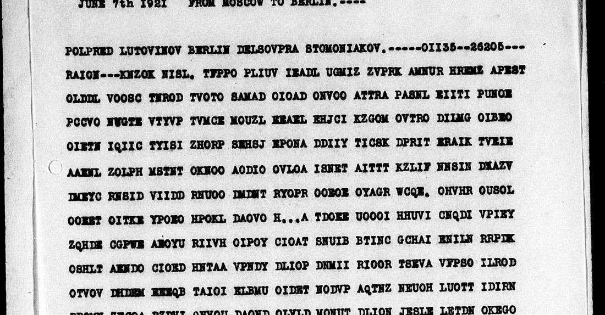

At a glanceCiphertext-only break · complete
- The telegram
- Nr 1883/1188/S, signed Voikov, 1 June 1921, Moscow to the Soviet mission in Berlin, for Stomoniakov. Intercepted 7 June.
- Where
- NARA RG 59, Central Decimal File 861.00, microfilm M316 roll 42, frame 1273. Part of catalogue 669.
- The cipher
- Russian in Latin letters, written in rows of 24 and sent column by column in a secret order.
- How it was deciphered
- Annealing against a Russian language model, with no crib. Only width 24 beat shuffled controls, and then the text came out.
- What it says
- Buy hardware at once for the goods-exchange fund: iron, nails, shovels, rakes, forks, axes, saws, chisels.
- Still open
- A few words in the saw and shovel entries, and where the key came from. No independent reader has checked this yet.
01 The telegram

The heading is in clear: Polpred Lutovinov Berlin Delsovpra Stomoniakov, then the numbers 01135–26205 and the word RAION. The same numbers close the text, followed by the date, the serial and the signature. We read the signature as P. L. Voikov and the addressee as B. S. Stomoniakov of the Berlin trade delegation; the frame gives surnames only.
The letters are Russian with nothing substituted: across the traffic to Stomoniakov O runs at 11.3%, I at 10.0%, E at 8.8%. So only the order is hidden. Q stands for the soft or hard sign, and punctuation is spelled out: zpt for a comma, dvoetochie for a colon.
02 How the key came out
The solver tries a column order, reads the rows and scores them against a Russian model. On this model, held-out Russian scores −2.14 per letter and shuffled letters −4.96.
- At widths 22 to 26, with 120,000 steps, only width 24 stood apart: −4.87 to −5.01 on four restarts, with controls at −5.22 and −5.24.
- Longer runs at width 24 produced readable Russian (−3.73), and independent restarts gave the same stretches of text in different rotations.
- After setting
Qto the soft sign and moving columns within the row, the score reached −3.21.
Read-out order of the columns, 0–23: 5 17 0 23 9 1 16 13 7 18 19 8 12 20 10 6 11 3 21 4 22 2 15 14. A different telegram of the same day carries the same first number, 01135, but this key does not decipher it, so that number does not name the key on its own. The key's source is unknown: its pattern matches nothing in 14 MB of general English or two George Wither texts, the poet Tiltman found behind another Soviet system.
03 What it says
For the goods-exchange fund with the countryside it is necessary to buy immediately hardware, colon: tyre iron, horseshoe iron; wire nails from two and a half to seven inches; horseshoe nails of middle sizes; shovels for earthwork, square, nine [or ten] by eleven and three-quarter inches, pointed, ten by eleven and a half inches; rakes; forks for hay and manure; carpenters' axes weighing two and a half to three pounds; cross-cut saws, three and a half, four […] by six inches; joiners' pincers of eight and ten inches; for sharpening saws; mortise chisels up to three-quarters of an inch; flat paring chisels from a half to one and a quarter inches; half-round from a half to one inch. Continuation follows.
The Politburo approved "Comrade Kopp's proposal" on 16 April 1921; notes to Lenin's collected works tie it to goods exchange and to Stomoniakov. We have not seen the decision itself, so the link to this order rests on subject matter. The closing prodslid is prod. sled., the "continuation follows" formula Tiltman quotes from the system he broke on another link.
04 What remains uncertain
chetyre shjima: not deciphered; probably a size or unit for the saws.cebefore the shovel size: unexplained.de?iatghas a lost letter, so девять or десять.kieszias клещи (pincers) comes from context, and "for sharpening saws" may be its own item.- The opening
derevneicould also be деревне и, "for the countryside, and". - Slips such as
tkwaroobcennogofor tovaroobmennogo look like radio errors; they are bracketed in the reading. So is the missing "s" before eachpolovinoi.
The continuation has its own kind of neighbour: another message in this system, with its own key and its own page. The continuation itself is decoded but does not yet form sentences, so it has no page. The figure traffic in the same file, a different cipher, is not solved.
Full texts
The transcription and the decryption of every document on this page, so that the reading can be used and checked. Short files are shown here; all are in the repository.
Nr 1883/1188/S, 1 June 1921
A buying order to Stomoniakov in Berlin: hardware for the goods-exchange fund with the countryside, listed with sizes (iron, nails, shovels, rakes, forks, axes, saws, chisels). It ends "continuation follows". The goods-exchange subject fits the Politburo decision on Kopp's proposal of 16 April 1921, by subject only.
Transcription
KNZOK NISL? TFPPO PLIUV IEADL UGMIZ ZVPRK AMNUR HREMZ APEST OLDDL VOOSC TNROD TVOTO SAMAD OIOAD ONVOO ATTRA PASNL EIITI PUNOE PCCVO NWGTE VTYVP TVMCE MOUZL EEAEL EHJCI KZGOM OVTRO DIIMG OIBEO OIETN IQIIC TYISI ZHORP SEHSJ EPONA DDIIY TICSK DPRIT ERAIK TVEIE AAENL ZOLPH MSTNT OKNOO AODIO OVLOA ISNET AITTT KZLIF NNSIN DEAZV IMEYC RNSID VIIDD RNUOO IMDNT RYOPR OOEOE OYAGR WCQE? OHVHR OUSOL OOEET OITKE YPOEO HPOKL DAOVO H???A TDOEE UOOOI HHUVI CNQDI VPIEY ZQHDE CGPWE AEOYU RIIVH OIPOY CIOAT SNUIB BTINC GCHAI ENILN RRPIK OSHLT AENDO CIOED HNTAA VPNDY DLIOP DNMII RIOOR TSEVA VFPSO ILROD OTVOV DHDEM EEEQB TAIOI ELBMU OIDET NODVP AQTNZ NEUOH LUOTT IDIRN RPOMN ZECOA RZDVI QNVOU DAOND OLVLD MONUT DLION JESLE LETDN OKEGO ZOBII AUDND DHILE IIPVO
Decryption
dliatkwaroobcennogofonda derevneineobqhodimonemed lennozakupiteskobianoito vardvoetochi?jelezoshinn oepodkovochnoegvozdiprov olochnyeivuchpolovinoido semidiuimovgvozdipodkovo chnoesrednichnomeroelopa tjzemlianwchrabotkvadrat ncede?iatgnaodinnalzatqt richetvertqiudiuimovostr okonefhnyedesiatqnaivena dzatqpolovinoiudiuimovzp tgrabpizptvilydlirsehana vozatoporyplotnichny?ves omdvapolovinoidotrec?fun tovpilypoperecdnyetr?pol ovinoichetyreshjimanashe stqdiuimovzptkieszistoli arnyevosemqiodlsiatidiui movdliatochkipelzptdolot adolbetnyedotriehetverti diuimastameskiiloskieotp oidoudnogochetpertziudiu imapolukruglyevtpoldoodn ogodiuinwzptprodslid
Reading
для т[о]в[а]рооб[м]енного фонда деревней необходимо немедленно закупите скобяной товар двоеточие железо шинное подковочное гвозди проволочные [от] двух [с] половиной до семи дюймов гвозди подковочные средних номеров лопаты земляных работ квадратные де?ять на одиннадцать три четверти дюймов остроконечные десять на [о]диннадцать [с] половиною дюймов зпт грабли зпт вилы для сена [и] навоза топоры плотничные весом два [с] половиной до трех фунтов пилы поперечные три [с] половиной четыре [...] на шесть дюймов зпт клещи столярные восемь и десяти дюймов для точки пил зпт долота долбежные до трех четвертей дюйма стамески плоские от по[л] до одного [и] четверти дюйма полукруглые от пол до одного дюйма зпт прод след
Translation
For the goods-exchange fund with the countryside it is necessary to buy immediately hardware, colon: tyre iron, horseshoe iron; wire nails from two and a half to seven inches; horseshoe nails of middle sizes; shovels for earthwork, square, nine [or ten] by eleven and three-quarter inches, pointed, ten by eleven and a half inches; rakes; forks for hay and manure; carpenters' axes weighing two and a half to three pounds; cross-cut saws, three and a half, four [...] by six inches; joiners' pincers of eight and ten inches; for sharpening saws; mortise chisels up to three-quarters of an inch; flat paring chisels from a half to one and a quarter inches; half-round from a half to one inch. Continuation follows.
Key: keyA3.json
05 Sources
- NARA, RG 59, 861.00, M316 roll 42: frame 1273.
- Bristol, No. 153, 20 April 1921, on the interception: frame 0871.
- John H. Tiltman, “Experiences 1920–1939”, NSA Doc ID 6618711.
- Lenin, Collected Works vol. 53, notes.


Transcription, key and reading: targets/voikov1921/; solver: targets/stomoniakov1921/.